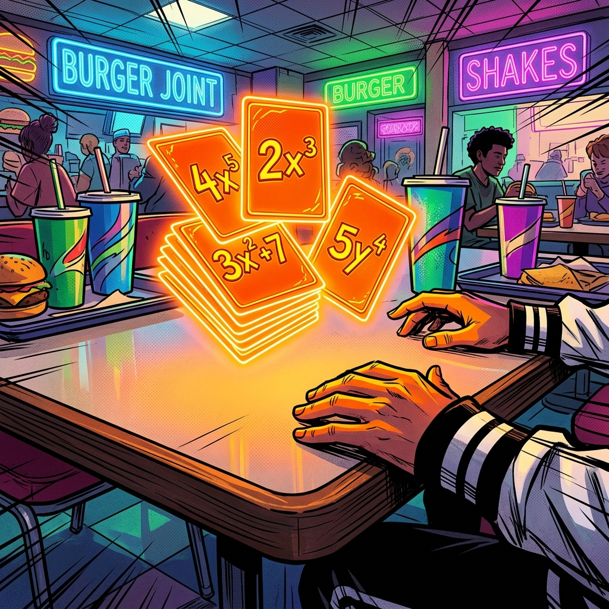

Capítulo 7
Monômios - A Base da Álgebra
7.1 Identificação e Grau
O monômio é a peça fundamental (o bloco de Lego) da álgebra. Ele é formado por um número (chamado de coeficiente) grudado em letras (chamadas de parte literal). Não há sinais de + ou - separando as partes dentro de um monômio isolado.
Na Prática:
Imagine que um monômio é como uma "moeda" em um jogo de videogame RPG. O número 3 (coeficiente) diz a quantidade de moedas, e a letra "x²" (parte literal) diz de qual tipo ela é (se é de ouro, prata ou bronze). Então, 3x² significa simplesmente que você tem 3 moedas do tipo "x ao quadrado" no seu inventário.
O grau do monômio (seu nível de poder no jogo) é simplesmente a soma dos expoentes das letras. Se a letra não tem expoente desenhado no papel, ele vale 1 invisível.
Exemplo: 5x²y³ tem grau 5 (pois 2+3=5).
Quiz de Fixação (7.1)
1. No monômio -8m³n², a parte literal é:
2. Qual o grau de 7x²y⁴z?
3. São monômios chamados de "semelhantes" aqueles que possuem:
4. O coeficiente (número) escondido do monômio -x² é:
5. O monômio 10 (apenas o número, sem letra) tem grau:
7.2 Operações com Monômios
Assim como fazemos com o dinheiro na vida real, podemos fazer as 4 operações básicas com os monômios, mas existem regras estritas sobre como misturar as letras.
1. Adição e Subtração:
A regra de ouro aqui é: só podemos somar ou subtrair monômios se eles forem IDÊNTICOS na parte literal. Eles precisam ser "semelhantes".
Na Prática:
Pense nas letras como frutas no supermercado. Se você pegar 3 maçãs (3x) e depois colocar mais 4 maçãs (4x) na sacola, você tem 7 maçãs (7x). A conta é simples: 3x + 4x = 7x.
Mas, e se você tentar somar 3 maçãs (3x) com 2 bananas (2y)? O resultado não é uma "maçanana". A resposta é apenas deixar indicado: uma cesta com 3 maçãs e 2 bananas (3x + 2y). Elas não se misturam!
Aviso vital: A regra vale para os expoentes. 2x² não se soma com 3x. É como tentar somar caixas de maçãs com maçãs soltas.
2. Multiplicação:
Aqui é terra sem lei! Você pode multiplicar qualquer monômio por qualquer monômio. A regra é: número multiplica número, letra multiplica letra igual. Na hora de multiplicar as letras, você soma os expoentes.
Na Prática:
Imagine que você comprou 2 pacotes de figurinhas da Copa (2x²). Cada pacote vem com 3 cartas brilhantes super raras (3x⁴). Qual é o seu total de poder? Multiplica-se os números: 2 × 3 = 6. Soma-se a "força" das letras: x² × x⁴ = x⁶. Resultado: 6x⁶.
3. Divisão:
A divisão é o inverso exato da multiplicação. Você divide os números e subtrai os expoentes das letras que forem iguais.
Na Prática:
Você tem um prêmio de 20x⁵ moedas virtuais de um baú e precisa rachar igualmente entre 4x² jogadores da sua guilda. Divida o dinheiro: 20 ÷ 4 = 5. Subtraia os impostos das letras: x⁵ ÷ x² = x³. Cada membro ganha 5x³.
Quiz de Fixação (7.2)
1. 5ab + 3ab resulta em:
2. (-4x³) × (2x²) é igual a:
3. 15a⁴b³ ÷ 3a²b resulta em:
4. Qual o resultado de 10x - 4x + x?
5. O produto de 3x × 2y é:
Avaliação de Aprendizagem: Capítulo 7
Nível Intermediário
1. Qual o grau do monômio 4x²yz³?
2. Reduza: 12x²y - 5x²y:
3. Produto de (3ab) × (5a²b):
4. Quociente de 20x⁶ ÷ 4x²:
5. Assinale o monômio semelhante a 2xy²:
Nível Avançado (Contexto Real)
6. (Engenharia Hidráulica) Imagine que você é um engenheiro hidráulico e recebeu a missão de calcular o volume de uma nova piscina olímpica em um resort de luxo. O volume bruto é modelado pelo monômio V = 3x²y. Sabendo que o resort exige uma largura de x = 4m e uma profundidade segura de y = 2m para a área infantil, qual a capacidade total em metros cúbicos?
7. (Agronegócio Tecnológico) Um produtor de soja utiliza drones para calcular a colheita. O software indica que a produção total em quilos é dada pela expressão (2x)³ × (x²), onde x é o índice de fertilidade do solo. Simplifique essa expressão para que o produtor possa inserir o dado no sistema de gestão.
8. (Arquiteto Urbano) Um arquiteto está projetando uma praça central em formato de quadrado perfeito. Cada lado da praça mede exatos 3x metros. Para encomendar o piso antiderrapante, ele precisa calcular a área total da praça. Qual expressão monomial representa essa área?
9. (Logística de E-commerce) Um centro de distribuição automatizado produz 10x⁵y² pacotes por dia. Os robôs precisam distribuir todo esse volume igualmente entre 2x²y caminhões autônomos. Feita a divisão, qual é a quantidade exata de pacotes que cada caminhão levará?
10. (Laboratório Bioquímico) A dosagem diária de uma enzima para experimentos (em mL) é calculada pela fórmula 5x³. Se o bioquímico identificou que o fator de peso para a amostra atual é x = 2, qual o volume total de enzima que ele deve preparar na pipeta?
Capítulo 8
Polinômios - Organizando Termos
8.1 Definição e Grau de um Polinômio
Se o monômio era apenas um tijolo de construção isolado, o polinômio é a parede inteira já construída juntando vários desses tijolos com cimento (sinais de + ou -). Um polinômio é uma cadeia formada por vários monômios diferentes que, por terem "frutas diferentes" (partes literais diferentes), não podem ser somados em um só.
Os polinômios ganham apelidos pelo seu tamanho:
- Binômio: Formado por 2 termos (ex: 2x + 3y).
- Trinômio: Formado por 3 termos (ex: x² + 5x + 6).
- De 4 termos para cima, chamamos genericamente de polinômio.
Na Prática:
Pense num jogo de cartas colecionáveis (como Pokémon ou Magic!). Uma carta sozinha de Fogo em cima da mesa é um monômio. O seu baralho inteiro na sua mão, que mistura cartas de Fogo, Água, Defesa e Magias diferentes (cartas que não se fundem), é o seu Polinômio. É o conjunto do arsenal.
Grau do Polinômio
Para descobrir o grau (o nível de poder) de um polinômio gigante, você não soma tudo. Você faz uma "batalha de monômios". O monômio que tiver o maior expoente sozinho é declarado o campeão e define o grau do polinômio inteiro.
Na Prática:
Qual é o nível do seu baralho no jogo? O nível da sua coleção é ditado pela sua carta mais forte e rara, e não pelas cartas fracas. No polinômio 4x⁵ - 2x³ + 8x - 1, nós temos quatro cartas. A primeira tem poder 5 (x⁵). O grau desse polinômio inteiro é 5, porque 4x⁵ é a carta mais forte da mesa!

Quiz de Fixação (8.1)
1. O polinômio 3x⁴ - x² + 5x - 7 possui o grau:
2. Como é chamado um polinômio com exatamente dois termos?
3. Qual o grau da expressão xy + x + y?
4. No trinômio 2x² - 5x + 3, qual é o termo independente (sumário sem letra)?
5. O polinômio 0x² + 3x + 1 é de qual grau real?
8.2 Adição, Subtração e Multiplicação de Polinômios
1. Adição e Subtração
Você precisa agrupar "o que é igual com o que é igual". Ao somar polinômios, você só soma os monômios que possuem a exata mesma letra e expoente.
Cuidado na subtração: O sinal negativo (-) na frente de um parêntese funciona como um feitiço reverso, ele inverte o sinal de absolutamente todo mundo que está lá dentro!
Na Prática:
Imagine sua caixa de brinquedos: (3 carrinhos + 2 bolas). A caixa do seu irmão tem: (5 carrinhos - 1 bola perdida). Ao jogar tudo no chão e somar, você junta carros com carros (3 + 5 = 8) e avalia as bolas separadamente (2 - 1 = 1). Resposta: 8x² + x.
2. Multiplicação (O "Chuveirinho")
Para multiplicar um termo de fora por um polinômio inteiro preso nos parênteses, você deve atirar o multiplicador em CADA UM dos membros lá de dentro.
Na Prática:
O "Chuveirinho" é igual a um garçom numa festa chique. A mesa VIP (os parênteses) tem 3 convidados sentados: (x² + 2x + 5). O garçom é o monômio de fora: 3x. O garçom tem a regra de servir a taça de todos:
- Serve o convidado 1: 3x × x² = 3x³.
- Serve o convidado 2: 3x × 2x = 6x².
- Serve o convidado 3: 3x × 5 = 15x.
Resultado: 3x³ + 6x² + 15x.
Quiz de Fixação (8.2)
1. (4x² - 3x) - (x² + 2x) resulta em:
2. O produto de (x + 4)(x + 1) é:
3. 3x × (2x² - 5) gera:
4. Somando x² + x com 2x² - 3x, obtemos:
5. A área de um retângulo de lados x e (x+5) é:
8.3 Divisão de Polinômios
1. Dividindo Polinômio por um Monômio
Se o divisor é um número/letra sozinho, é super democrático. Você pega o divisor e o divide por CADA membro do polinômio de cima, rachando a conta separadamente.
Na Prática:
Imagine uma conta de lanchonete: R$ 40 em hambúrgueres (40x³) + R$ 20 em batatas (20x²). O divisor são 4 amigos (4x). Hambúrguer: 40x³/4x = 10x². Batata: 20x²/4x = 5x. Resposta: 10x² + 5x.
2. Divisão na Chave (Polinômio por Polinômio)
Quando o divisor é grande (ex: x-2), usamos a divisão na Chave em formato de "L", idêntica à da 4ª série, mas com letras.
Na Prática:
O "RPG de Turnos": A divisão na chave é um combate tático. O exército inimigo está dentro da chave. Você ataca sempre usando o seu Líder (o termo de fora de maior grau) mirando apenas no Líder inimigo (termo de dentro de maior grau). Você o divide. Depois, multiplica o resultado por todos os capangas, inverte o sinal e ataca até o Resto ser zero!
Quiz de Fixação (8.3)
1. (4x³ + 8x²) ÷ 2x resulta em:
2. Na divisão de (x² - 4) por (x - 2), o primeiro passo é dividir:
3. O quociente de (x² - 5x + 6) ÷ (x - 2) é:
4. Se o resto de uma divisão de polinômios é zero, a divisão é chamada de:
5. Ao dividir 10x⁴ por 2x², o resultado é:
Avaliação de Aprendizagem: Capítulo 8
Nível Intermediário
1. Qual o grau do polinômio x⁵ - 2x² + 10?
2. Reduza: (3x+2) + (2x-5):
3. Produto (x+2)(x-3):
4. Divisão (6x² - 4x) ÷ 2x:
5. Trinômio tem quantos termos?
Nível Avançado (Contexto Real)
6. (Topografia e Terrenos) A prefeitura disponibilizou a planta de um terreno retangular cuja área total é representada pelo polinômio x² - 9 metros quadrados. Um corretor mediu o local e descobriu que um dos lados vale exatamente (x + 3) metros. Qual é o polinômio que expressa a medida do outro lado da cerca?
7. (Design de Interiores High-Tech) Um arquiteto vai montar um deck de madeira em formato de L. A largura do deck é modelada por um binômio de grau 2 (x² + 1) e o comprimento é um monômio de grau 1 (3x). Ao calcular a área total para encomendar o verniz, qual será o novo grau máximo do polinômio gerado?
8. (Gestão Financeira de Startups) O lucro líquido mensal de uma nova empresa de tecnologia foi modelado pelo analista de dados com a curva do trinômio P(x) = x² - 5x + 6 (em milhares de reais), onde x é o tempo em meses. Exatamente no 3º mês após o lançamento, qual foi a situação financeira real da empresa?
9. (Engenharia de Robótica) Um braço robótico industrial opera seguindo um desvio de precisão modelado pelo polinômio Q(x) = x² + 1. O auditor de qualidade divide esse polinômio pelo fator de ajuste de máquina (x - 1) para calibrar os sensores. Ao realizar a divisão, qual é o valor matemático do "resto" encontrado?
10. (Logística de Embalagens) Uma transportadora projeta caixas de papelão customizadas onde a largura e a altura são definidas pela expressão (x² + 1) centímetros. Se multiplicarmos apenas essas duas dimensões para encontrar a área da face frontal, qual será o grau dominante da expressão resultante?